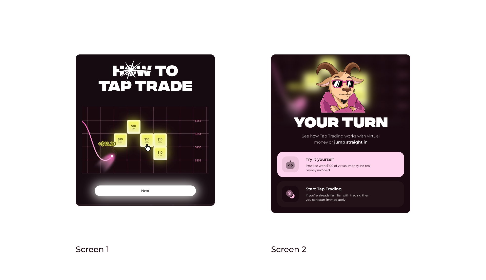
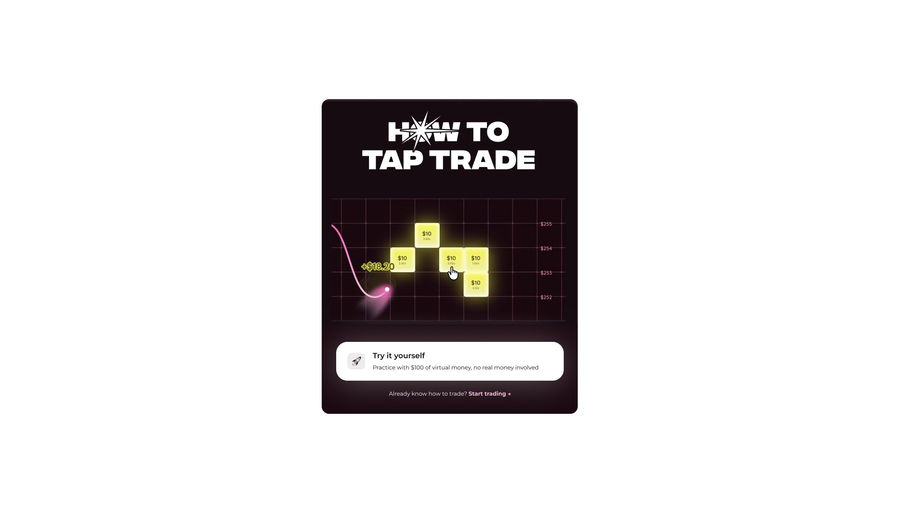
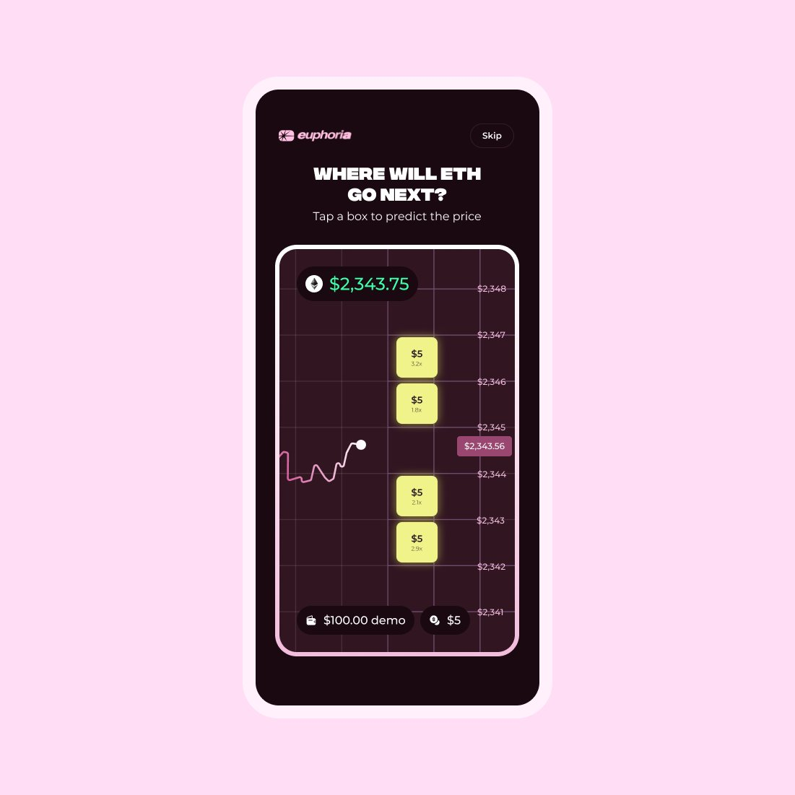
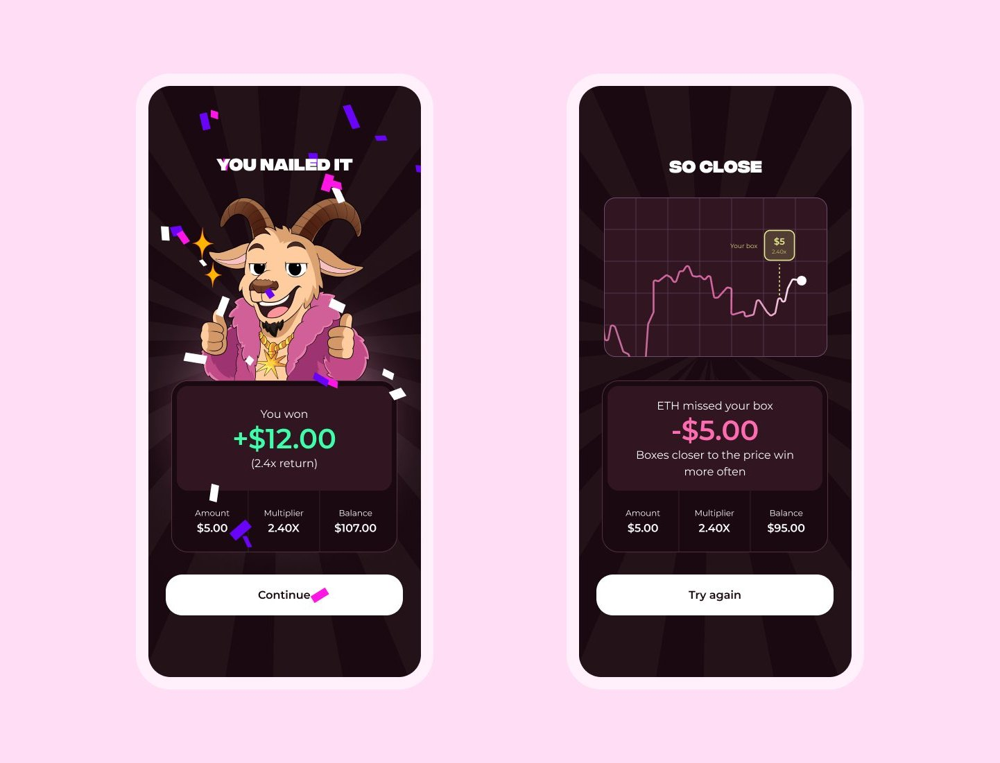
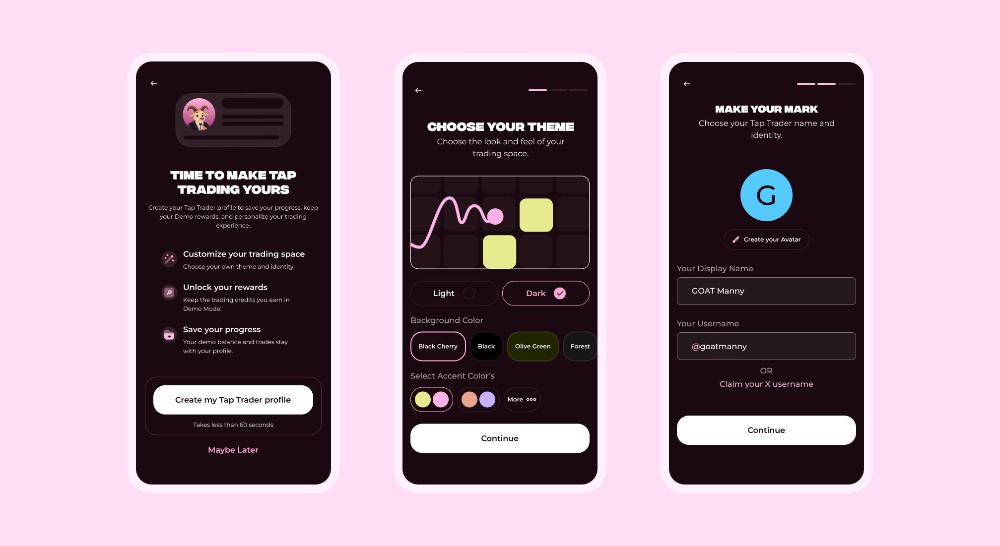

Letting first-time users try Tap Trading before they create an account
This is self-initiated work for my portfolio. I am not affiliated with Euphoria, and Euphoria did not commission this work.
Euphoria is a crypto trading app built around Tap Trading: instead of working through a complex trading interface, you tap the chart to predict where the price will go.
For someone who has never touched crypto, making that first trade can still feel intimidating. Unfamiliar concepts, complex flows and having no starting capital all make it hard to take the first step. These barriers come from my own first time in crypto, so I treat them as assumptions for the test at the end of this piece to check.
Most crypto apps also ask for commitment before showing any value: install, sign up, connect a wallet, learn, trade. A first-time user is asked for an email and a wallet before they know why they should bother, and the flow looks like every other app they've dismissed.
Euphoria already has a testnet, and I used it myself during this exploration. It works, but it speaks crypto: testnet, wallet, gas, tokens, network. Each is a concept a new user has to learn before their first trade.
So I designed Demo Mode: practise Tap Trading with virtual money and no crypto vocabulary. It doesn't replace the testnet. It's a simpler way in for people with no crypto knowledge.
Euphoria's onboarding already has a short visual explainer of Tap Trading. My first idea wasn't to add more education, but to change what comes straight after it. I compared two options.


I chose Option 2 because the core value of Tap Trading is how simple it is. The goal isn't to make people spend more time learning about trading. It's to let them feel how simple it can be.
Option 2 raised a bigger question. If trying is the best explanation, why explain first at all?
So in the final flow, the first thing a new user sees isn't a sign-up form, a tutorial or a wallet. It's a live Ethereum chart asking "Where will ETH go next?" They tap to predict where the price will move, using virtual money. No account, no wallet, no money committed.
The principle: experience before commitment.

The result appears straight away. A win shows the stake, the multiplier, the return and the new balance, so the user learns that a tap is a prediction, that the price passing through their box decides the outcome, and that distance changes the reward. The celebration makes it feel like discovery, not a lesson.
Many first predictions will lose, and how a loss feels decides whether a beginner taps again. So the loss gets the same care. "So close" replays where ETH went, so you can see the price pass under your box. It shows the $5 stake gone and the new balance, and gives one tip that makes the next tap better: boxes closer to the price win more often. Then a single button: try again. No confetti, no shame, and no pretending it didn't happen.
The two screens are deliberately different. The win is loud, with the mascot, confetti and a big green number. The loss is quiet: no mascot, just the replay and the facts. In a product where real money is close by, losses should be clear and calm, not turned into a show.

To give practice a purpose, Demo Mode wins earn trading credits. Credits can't be cashed out, but they can be used on real Tap Trades, and if that real trade wins, the profit is real. That's how Demo Mode tackles the third barrier: it gives someone with no starting capital a first real stake.
Free money tied to trading is also the riskiest part of the concept, so I'd ship it with guardrails:
I considered credits that only reduce trading fees. They're cheaper and simpler, but they don't help someone with nothing to trade with, which is the problem I set out to solve. I also dropped the weekly prize draws from my first draft: the concept stands without them, and draws tied to trading add legal risk for little gain.
Only after a trade and a result does the app ask for more: "Time to make Tap Trading yours." The profile is something to create and keep, not another requirement. Users choose a theme, background and accent colours, then an avatar, display name and username. Only then are they asked to create an account, to save something they've already started building.

I'm using the IKEA effect as a hypothesis, not a fact: people value what they helped make, so they should have more reason to save it.
I shared an earlier version privately with Euphoria's co-founders in August 2026, rather than posting it publicly, in case it touched anything sensitive. They thanked me for it and passed it on to their team. Since then I've added the loss screen and the guardrails on rewards.
I expect this to reduce early drop-off by lowering the first commitment, and to increase sign-up because users have something to save. That's a hypothesis, not a result.
The first step is small: five people who have never traded crypto try the first tap on a prototype, with no explanation from me. I'd watch whether they understand what a tap means without help, whether they tap again after a loss, and whether they'd create a profile.
If that holds up, I'd test the flow against the current sign-up-first experience. Success would look like this:
I designed the winning path first, because it's the moment I was most excited about, and only added the loss screen later. A trading product has to be just as clear when you lose, so next time that state would be part of the first pass.
I also shaped the reward model before working out its costs and risks. Next time I'd sketch the guardrails first, then design the screens around them.
And I leaned on my own experience of the testnet. The most useful next step is to watch a few people who have never traded crypto try the first tap, without any explanation from me.